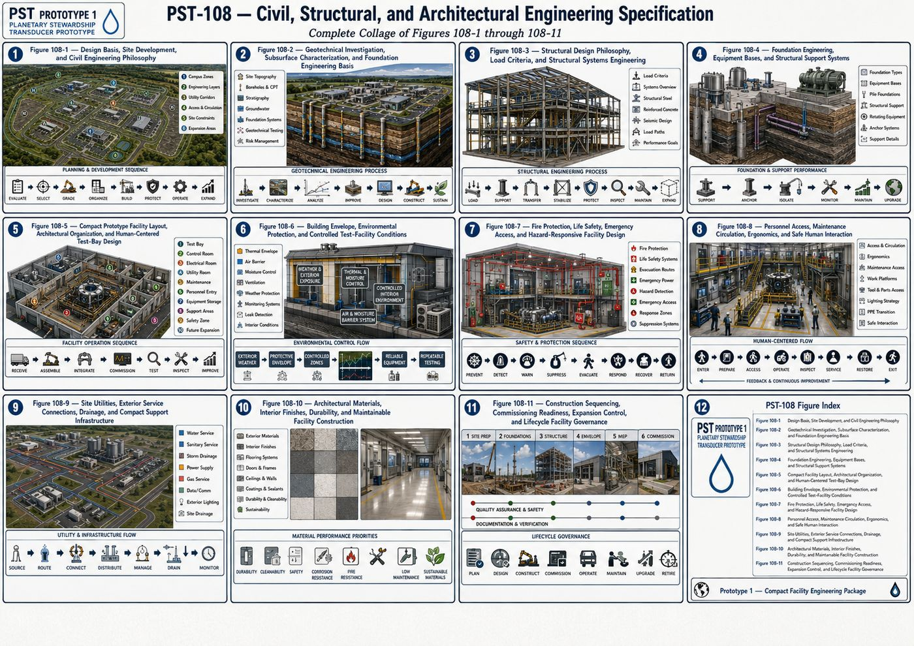
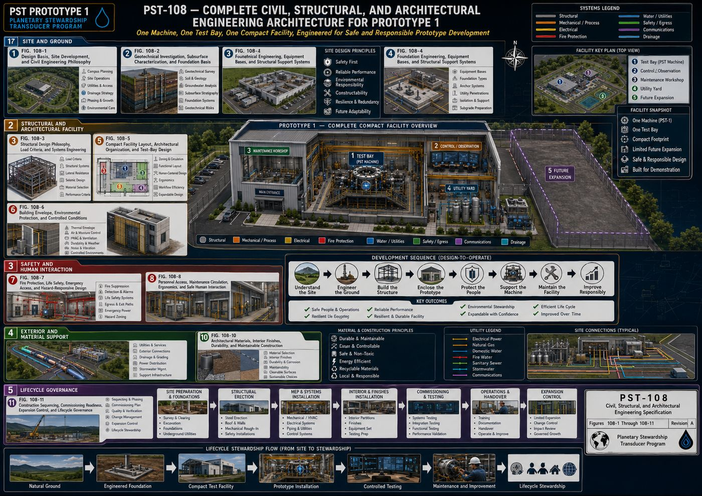
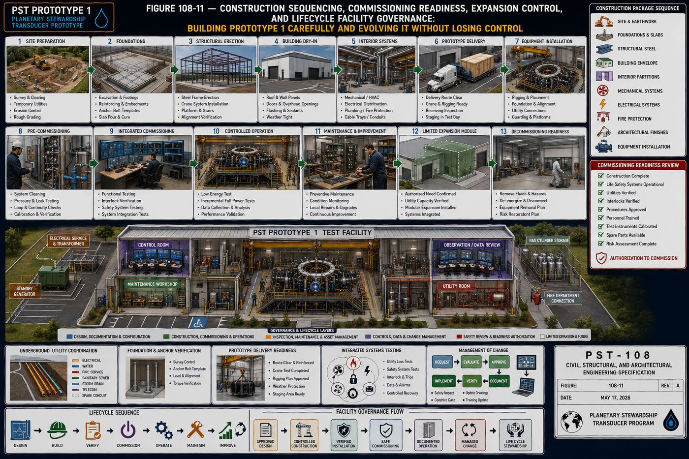

The Final Volume
This is the eighth and final detailed volume page expanding on [[planetary-stewardship-transducer]] (AW-04), completing the full engineering set alongside [[pst-101-mechanical-systems]] (AW-10) through [[pst-107-electrical-engineering]] (AW-16). Where PST-105 described the machinery, PST-108 describes the engineered home that houses and supports it, the physical plant itself: foundations, structural systems, buildings, and the architectural spaces around the machine.
PST-108 defines the complete civil, structural, and architectural infrastructure supporting Prototype 1: the civil engineering philosophy and site-selection criteria, the geotechnical investigation program that characterizes the ground beneath the facility, structural design and system selection, foundation engineering for both buildings and equipment, the compact prototype facility layout built deliberately around one machine rather than an industrial campus, the building envelope and controlled environmental conditions, fire protection and life safety, human-centered personnel access and maintenance circulation, site utilities and exterior service connections, architectural materials and interior finishes, and construction sequencing through long-term lifecycle governance.
All eleven chapters are covered below, following the specification's own structure: purpose, engineering intent, philosophy, architecture, and a chapter summary. A consistent discipline runs through every chapter of this volume: build only what a first-generation prototype facility actually needs, and resist scaling the building toward a speculative future industrial campus.
I. Civil Engineering Philosophy and Design Basis
This specification defines how Prototype 1 interfaces with the earth beneath it, the structures surrounding it, the environment around it, and the people who operate and maintain it, providing the stable physical foundation upon which every other engineering discipline depends. Prototype 1 is engineered as an integrated industrial campus rather than isolated buildings and equipment, with site grading, structural foundations, utility corridors, roads, drainage, and buildings functioning as one coordinated system in which each subsystem complements the others.
Site selection weighs geological stability, soil bearing capacity, flood risk, groundwater conditions, seismic hazard, wind exposure, environmental permitting, and transportation access, since the selected site must support safe operation throughout the expected facility life. The facility layout organizes into clearly defined operational zones, process operations, utility systems, maintenance, and future expansion, minimizing congestion while improving operational efficiency and safety, and site grading harmonizes engineered infrastructure with existing terrain wherever practical, balanced earthwork, positive drainage, and minimized erosion. Civil engineering is coordinated continuously with mechanical, electrical, instrumentation, process, fire protection, and architectural disciplines throughout design, so that design conflicts are resolved during engineering rather than during construction.
II. Geotechnical Investigation, Subsurface Characterization, and Foundation Engineering Basis
Every structural, mechanical, electrical, and process system ultimately transfers its loads into the ground, so the earth beneath Prototype 1 is treated as an engineered component of the overall system rather than merely the surface upon which the facility is constructed, investigated with the same rigor applied to every mechanical, electrical, and structural discipline. The site investigation program includes topographic surveying, geological mapping, test borings, cone and standard penetration testing, rock coring, groundwater monitoring, and laboratory soil testing, extending beyond the footprint of major structures to evaluate future expansion areas.
Regional geological assessment identifies bedrock formations, fault systems, seismic characteristics, and slope stability, and every soil layer is classified by grain-size distribution, plasticity, shear strength, permeability, and frost susceptibility, establishing its engineering behavior. Where rock is encountered, its type, strength, weathering, and fracture orientation are evaluated for both foundation selection and excavation methodology, and groundwater conditions, water table elevation, seasonal fluctuations, and hydrostatic loading, are documented throughout both construction and operational phases. Allowable bearing capacity is established for each structural area accounting for static and dynamic loading, equipment vibration, and differential settlement, and settlement predictions guide both foundation selection and construction sequencing. Where natural soil conditions are inadequate, engineered ground improvement, compaction, stone columns, deep soil mixing, or micropiles, is evaluated, and geotechnical risks, expansive soils, liquefaction susceptibility, buried obstructions, are identified early and coordinated continuously with every other engineering discipline to reduce redesign and construction conflicts.
III. Structural Design Philosophy, Load Criteria, and Structural Systems Engineering
This chapter defines the methodology for designing buildings, equipment structures, pipe racks, platforms, and load-bearing elements capable of safely resisting operational, environmental, and accidental loading throughout the facility's design life, providing a resilient, maintainable, and expandable framework that integrates seamlessly with the civil, mechanical, electrical, instrumentation, and architectural disciplines. Every structural member serves a defined engineering purpose while contributing to the stability of the facility as a unified whole, prioritizing personnel safety, equipment protection, structural redundancy, and long-term durability.
The structural design basis considers dead loads, live loads, equipment loads, wind and seismic loading, thermal expansion, snow and rain loading, crane loading, and vibration, with appropriate load combinations and safety factors applied for both normal and extreme operating conditions. Structural framing systems, structural steel, reinforced concrete, composite construction, pipe racks, and elevated platforms, are selected according to functional requirements, constructability, maintenance access, and lifecycle performance rather than uniformly applied. Structural steel provides the primary framing for process buildings and equipment structures, with member sizing, connection design, corrosion protection, and fireproofing engineered to support future modifications without compromising existing operations, and reinforced concrete systems serve wherever mass, fire resistance, or foundation integration favor concrete over steel. Structural stability, equipment support structures, and a program of structural inspection and lifecycle stewardship are coordinated continuously with every other engineering discipline throughout the facility's operational life.
IV. Foundation Engineering, Equipment Bases, and Structural Support Systems
Foundation engineering transforms the geotechnical knowledge established in Chapter II into permanent structural systems capable of reliably transferring all operational loads into the supporting ground. Every foundation functions as an engineered interface between the structure and the earth, transferring loads safely, controlling settlement, maintaining equipment alignment, and resisting vibration, designed as an integral component of the complete Prototype 1 structural system rather than an isolated concrete pour.
Foundation systems, spread and combined footings, mat foundations, reinforced concrete pedestals, equipment inertia blocks, and deep pile or drilled-shaft foundations, are selected according to loading requirements, soil conditions, and equipment characteristics to optimize constructability, stability, and long-term performance. Building foundations account for bearing capacity, differential settlement, frost protection, and future expansion interfaces, while dedicated equipment foundations are provided wherever equipment loading or operational dynamics exceed the capabilities of standard building slabs, accounting for static and dynamic operating forces, thermal movement, alignment tolerances, and vibration isolation. Rotating equipment support, anchor bolt systems, and grouting systems together preserve operational precision while minimizing transmitted vibration, and settlement control and foundation monitoring confirm the ground continues performing as designed throughout the platform's operational life, coordinated continuously with the structural, mechanical, and electrical disciplines that depend on precise foundation alignment.
V. Compact Prototype Facility Layout, Architectural Organization, and Human-Centered Test-Bay Design
The facility is designed around one primary machine, one principal test bay, and only the support spaces necessary to assemble, operate, inspect, maintain, and safely evaluate the prototype. The explicit objective is to create a serious, technically capable test environment without allowing the building to grow into a commercial campus, refinery, manufacturing plant, or data-center-scale complex: Prototype 1 remains visually and physically identifiable as the central purpose of the facility, and the building is never designed around hypothetical future industrial production requirements. Future growth is accommodated through reserved connection points and limited expansion space rather than by constructing unused infrastructure during the prototype phase.
The initial facility is organized around a total enclosed area on the order of 8,000 to 15,000 square feet, a preliminary planning range covering the main test bay, control and observation spaces, electrical and utility rooms, maintenance and fabrication space, and personnel support areas, with the final size determined by the actual machine envelope, hazard classification, and service clearances. Within that, the test bay itself carries a preliminary machine-area allowance on the order of 2,000 to 4,000 square feet, subject to final equipment arrangement, and houses the PST core, intake and output routing assemblies, process skids, instrumentation racks, and safety containment systems.
5.1 Three Spatial Layers
| Zone | Contains |
|---|---|
| Primary Zone | PST core, process equipment, test instrumentation, mechanical auxiliaries, containment systems, service platforms — directly involved in prototype operation |
| Support Zone | Control room, electrical room, utility room, maintenance workshop, tool and parts storage, equipment preparation area — needed to operate and maintain the prototype |
| Personnel Zone | Entry vestibule, offices, meeting room, break area, restrooms, PPE storage, emergency coordination point — supporting safe human occupancy |
This hierarchy prevents administrative functions from interfering with test operations. The control room provides a protected, unobstructed operating environment with direct visual access to the test bay through rated observation glazing or protected cameras where practical, remaining outside the primary equipment hazard boundary, and a dedicated observation and engineering-review area supports real-time evaluation without crowding the control room during active testing. Electrical and utility rooms are concentrated in compact, accessible spaces adjacent to the test bay, separated from personnel areas where heat, noise, or vibration require physical isolation, and the maintenance workshop is located near the test bay but sufficiently separated to prevent maintenance activity from disrupting active testing. No permanent wall, platform, pipe route, or electrical installation is permitted to block the planned removal path of major prototype components, and lifting capability, an overhead bridge crane, monorail hoist, or portable gantry, is sized to the heaviest maintainable prototype component with suitable engineering margin. The facility is divided into clearly defined safety zones, from a General Access Zone through a High-Energy Exclusion Zone, indicated through floor markings, signage, access control, and operator displays, with exact zoning determined by prototype hazards identified during detailed engineering. Architecturally, the building is meant to communicate its purpose clearly, one central machine, transparent engineering logic, visible structural organization, rather than resembling a warehouse filled with unrelated equipment.
VI. Building Envelope, Environmental Protection, and Controlled Test-Facility Conditions
The building envelope protects the PST machine, supporting equipment, instrumentation, personnel, and test data from weather, moisture, dust, temperature variation, uncontrolled airflow, and noise that could affect safety or experimental repeatability. The explicit objective is not an elaborate institutional building; it is one compact, durable, easily maintained enclosure capable of supporting serious prototype development, with the envelope functioning as a protective engineering system rather than decorative architecture: keep water out, control temperature and humidity, limit dust, resist wind and snow, and remain easy to inspect and repair.
The building favors a simple, efficient form with minimal unnecessary corners, roof transitions, or complex facade features, a compact rectangular or near-rectangular structure that reduces envelope area, simplifies steel framing and roof drainage, and makes future expansion easier, with architectural expression free to identify the facility as an advanced research building as long as visual complexity never interferes with engineering practicality. Exterior wall systems, thermal performance, an air barrier system, and moisture control work together with a roofing system and roof drainage designed for long-term weathertightness, and interior environmental zoning, temperature control, humidity control, and ventilation strategy, are tailored to each space's actual function rather than applied uniformly across the whole building. Pressure zoning, filtration, and dust and contamination control protect sensitive instrumentation, acoustic control manages noise from pumps and mechanical equipment, and environmental monitoring and leak detection give the facility itself the same kind of continuous condition awareness PST-106 established for the machine inside it.
VII. Fire Protection, Life Safety, Emergency Access, and Hazard-Responsive Facility Design
The objective is to ensure the compact test facility can operate safely during assembly, commissioning, active testing, maintenance, and abnormal conditions without allowing the safety architecture to become disproportionate to the scale of the first prototype. Life safety takes priority over equipment protection, schedule, and test continuity without exception, and the safety system is explicitly based on verified hazards rather than speculative worst-case assumptions that would force the first prototype into an oversized industrial facility.
Hazard identification and facility hazard zoning establish where fire, electrical, and mechanical risks actually exist, and occupancy, egress, and emergency access are designed around those verified zones rather than a generic industrial template. Fire detection, alarm and notification, automatic suppression where warranted, and fire separation between hazard zones work together with smoke control to limit fire and smoke spread, and the Emergency Shutdown System, hazardous energy isolation, and safety interlocks described at the equipment level in PST-104 and PST-106 extend into the building's own emergency systems, gas detection, battery safety, and spill containment. Emergency lighting and backup power, emergency communications, and a documented pre-test safety sequence and incident response plan complete the protective architecture, and every safety system is subject to ongoing inspection, testing, and documentation as a permanent part of facility stewardship rather than a one-time commissioning exercise.
VIII. Personnel Access, Maintenance Circulation, Ergonomics, and Safe Human Interaction
The building, access systems, platforms, controls, lighting, service clearances, and maintenance routes are developed together rather than treating the machine as equipment placed inside an empty shell: operators must be able to see clearly, technicians must be able to reach equipment safely, and components must be removable without dismantling unrelated systems. A system that is difficult to reach, inspect, or understand will eventually become difficult to operate safely.
Facility entry and an access-control hierarchy establish who can reach which zones, and primary personnel circulation is kept separate from secondary technical circulation and equipment service clearances wherever practical, so people are never required to cross active equipment-handling routes during normal operations. Platforms, elevated access, stairs, ladders, and guarding are engineered around real ergonomic working heights and manual-handling limits rather than minimum code compliance alone, and crane and hoist interaction, equipment removal routes, and maintenance workshop workflow are planned as continuous paths rather than improvised around finished construction. Lighting, color and visual communication, and signage support rapid orientation during both routine work and emergencies, and control room ergonomics, an observation area, and accessibility provisions extend the same human-centered design philosophy to the people who monitor the platform as to the technicians who service it. Personal protective equipment stations, hygiene and decontamination facilities, and a pre-start personnel verification procedure round out a facility designed, in the specification's own words, to function as one understandable human-centered workspace together with the machine it houses.
IX. Site Utilities, Exterior Service Connections, Drainage, and Compact Support Infrastructure
These systems provide the electrical power, water, communications, drainage, emergency support, and limited utility services required to operate the prototype without turning the project into a large industrial campus, remaining compact, organized, accessible, and directly proportional to one first-generation test facility. Large utility plants, extensive pipe racks, multiple substations, broad roadway networks, and oversized service yards are explicitly excluded unless later engineering proves them necessary.
Available public or shared utility services, electrical power, potable water, sanitary sewer, telecommunications, and fire-protection water, are used where technically and economically practical, with dedicated on-site systems added only where Prototype 1 has requirements conventional services cannot satisfy. Electrical service, emergency and standby power, and water service connect through underground utility routing with clear identification, and stormwater management and site grading direct runoff safely away from the facility and its equipment pads. The exterior service yard accommodates cooling equipment, compressed gas and fuel storage where required, and equipment delivery, with roads and vehicle access, parking, and pedestrian access sized to a compact facility rather than an industrial campus. Exterior lighting and security, a landscape and environmental buffer, and winter and severe-weather operations provisions complete the exterior infrastructure, and the chapter explicitly reserves only limited expansion connections, one justified future utility tie-in rather than speculative capacity for unbuilt phases.
X. Architectural Materials, Interior Finishes, Durability, and Maintainable Facility Construction
The objective is a building that is durable, cleanable, repairable, and professional, appropriate for advanced prototype work, without introducing unnecessary architectural expense or decorative complexity. Every material is selected according to how the facility will actually be used: the test bay must tolerate equipment movement, heat, vibration, dust, and fluids; the control and observation spaces must support concentration and long-duration occupancy; utility and electrical rooms must remain organized, dry, and easy to inspect. No material is selected solely for appearance where a simpler, more durable alternative would perform better.
The building is divided into material-performance zones matching this functional variation, with the test-bay floor finish, floor zoning and markings, and workshop flooring engineered for heavy use, while control-room flooring and interior wall finishes prioritize acoustic performance and comfortable long-duration occupancy. Wall construction and test-bay wall protection resist impact and chemical exposure where equipment demands it, and doors, observation glazing, casework, and maintenance workbenches are selected for durability and repairability over decorative finish. Moisture-resistant areas, slip resistance, and corrosion-resistant materials protect against the facility's actual operating conditions, and fasteners, penetrations and firestopping, and modular or removable construction keep the building serviceable and reconfigurable rather than fixed in place. Material documentation, quality control during construction, and a lifecycle maintenance plan carry the same disciplined stewardship established throughout the rest of the PST program into the building's own materials and finishes.
XI. Construction Sequencing, Commissioning Readiness, Expansion Control, and Lifecycle Facility Governance
This closing chapter establishes how the compact Prototype 1 facility is built, verified, placed into service, modified, maintained, and eventually upgraded without losing control of its original purpose. Prototype 1 remains one machine inside one purpose-built test facility, so the project explicitly avoids the construction sequencing, documentation systems, and expansion plans designed for a large industrial campus: the governance model stays rigorous enough to support advanced engineering while remaining proportional to a first-generation prototype.
Construction proceeds through early site work, underground utility coordination, foundation construction sequencing, structural erection, building dry-in, and interior construction, followed by mechanical and electrical installation and prototype equipment delivery and installation, with construction quality assurance and change control maintained throughout. Pre-commissioning, a commissioning readiness review, systems commissioning, and integrated testing precede formal operational handover and an initial operating period, mirroring the disciplined verification-before-acceptance philosophy established across every other PST volume. Ongoing governance covers management of change, configuration control, and explicit expansion control, expansion is limited to one justified future module rather than open-ended growth, alongside asset management, preventive and predictive maintenance, spare parts and critical materials planning, documentation governance, training and competency, and a modernization strategy. The chapter closes on the same note that opened it: the result should be a facility that can evolve with Prototype 1 without becoming oversized, disorganized, or detached from its original purpose, disciplined evolution rather than uncontrolled accumulation.



Protected — Detailed Engineering Package
Geotechnical investigation data and bearing capacity calculations, final structural member sizing and connection design, foundation and anchor bolt design details, final facility square footage and room-by-room dimensions, exact hazard zoning boundaries, utility sizing and routing drawings, material specifications, and the complete construction drawing set are held under NDA pending site selection, requirements freeze, and physics validation, consistent with the source specification's own stated pre-construction status.
Full Specification Available Under Signed NDA ↗Documentation Summary
The civil engineering philosophy and coordinated site-system architecture, the geotechnical investigation program, the structural design basis and system-selection framework, the foundation engineering classification, the three-zone compact prototype facility layout and its deliberate anti-campus scale philosophy, the building envelope and environmental protection strategy, the hazard-verified fire and life safety architecture, the human-centered personnel access and circulation framework, the compact site utilities philosophy, the zoned material-selection strategy, and the construction and lifecycle governance framework are original work product of Joshua Farrior, developed under CHRISTOS™ Energy, Technology & Harmonic Design Consulting, LLC.
Held under NDA pending further development: geotechnical investigation results and bearing capacity calculations for any specific site; final structural member sizing, connection design, and load calculations; foundation and anchor bolt design details; final facility dimensions and room-by-room square footage beyond the preliminary planning ranges described above; exact hazard zoning boundaries and fire protection system design; utility sizing, routing, and site civil drawings; material specifications and finish schedules; the complete engineering drawing package; the bill of materials; and construction and commissioning procedures beyond the sequence described above.
Set Complete
This completes the eight-volume detailed engineering set for the Planetary Stewardship Transducer Prototype 1, introduced in [[planetary-stewardship-transducer]] (AW-04) and expanded volume by volume across AW-10 through AW-17: mechanical, electrical systems, hydraulic, controls and automation, structural, instrumentation and process control, electrical engineering, and now civil, structural, and architectural. Together these nine pages represent the complete public account of the program's engineering architecture, from the platform's physical skeleton through its senses, its intelligence, its power infrastructure, and the building that houses it.
© 2026 Joshua Farrior · Christos™ Energy, Technology & Harmonic Design Consulting, LLC · All Rights Reserved · Business ID: 202511071941923 · Christos™ trademark registered on the USPTO Principal Register · christosenergy.com